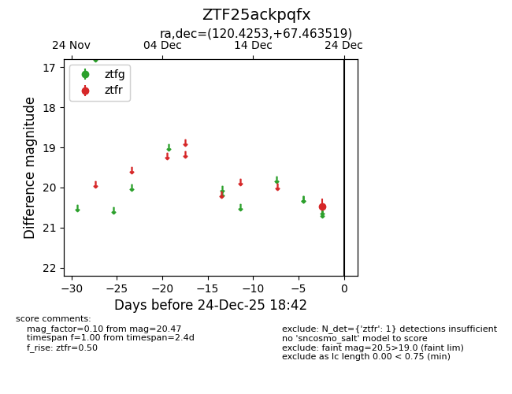
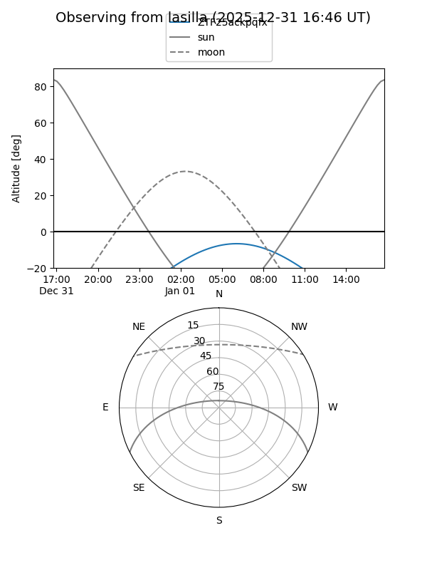
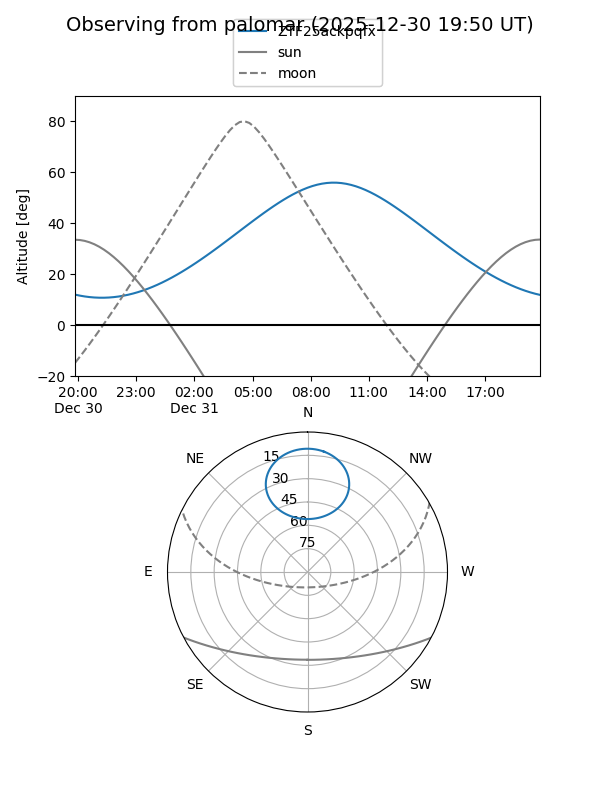

ZTF25ackpqfx
Target ZTF25ackpqfx at 2025-12-31 18:00
Aliases and brokers:
FINK: link
Lasair: link
ALeRCE: link
alt names
ZTF25ackpqfx (ztf,fink_ztf)
Coordinates:
equatorial (ra, dec) = 120.4253,+67.46352
equatorial (HMS+DMS) = 08:01:42.07,+67:27:48.67
galactic (l, b) = (148.3391,+31.60831)
Flags:
Photometry:
last ztfr=20.47
1 ztfr detections
Lightcurve

Visibility


Additional plots